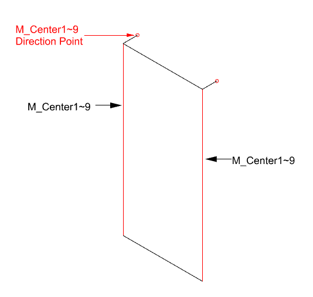

Direction Point — Wire Frame 요소
MC1 ~ MCXX
Direction Point는 Mullion Line의 방향을 판단하기 위한 점 요소입니다.
Mullion Line과 같은 이름의 레이어에 있어야 하며, 기준선의 끝점 근처에 배치해야 합니다.
사용 방법
- Mullion Line과 같은 레이어 이름을 가진 점 또는 관련 객체를 준비합니다.
- Direction Point를 Mullion Line 끝점 기준 반경 300mm 안쪽에 배치합니다.
- Wire Frame 작성 전 방향점이 올바른 Mullion Line에 대응되는지 확인합니다.
실행 예시

Mullion Line 끝점 근처의 Direction Point
주요 내용
| 항목 | 설명 |
|---|
| 레이어 | Mullion Line과 같은 M_Center 레이어를 사용합니다. |
| 인식 범위 | Mullion Line 끝점에서 300mm 반경 안에 있어야 방향점으로 인식됩니다. |
| 사용 목적 | Mullion Line의 방향과 기준 끝점을 판정합니다. |
주의: Direction Point가 끝점에서 너무 멀거나 다른 레이어에 있으면 해당 Mullion Line의 방향점으로 인식되지 않을 수 있습니다.